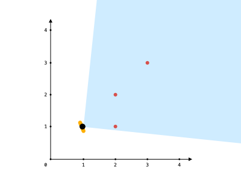
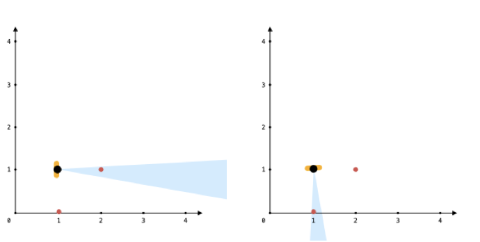

1610. 可见点的最大数目
每个点算相对极角排序，复制一份 +360° 接成环，用定长 angle 的滑窗数最多覆盖几个点；与自己重合的点直接计入。
思路
- 只关心方向不关心距离：
Math.atan2(dy, dx)把每个点变成 (−π, π] 的极角；与 location 重合的点永远可见，先摘出来。 - 视野可以转，最优窗口的起点必然压着某个点的极角 → 排序后枚举每个点作为窗口左端。
- 跨 0° 的窗口靠「复制一份 +2π」拉直成普通滑窗；
r不回退，整体 O(n)。 - 浮点比较带
1e-9容差，恰好差 angle 度（如 90° 正交）的点也算看得见。
图解
最优解
1import java.util.*;2 3class Solution {4 public int visiblePoints(List<List<Integer>> points, int angle, List<Integer> location) {5 int same = 0;6 List<Double> angles = new ArrayList<>();7 int px = location.get(0), py = location.get(1);8 for (List<Integer> p : points) {9 int dx = p.get(0) - px, dy = p.get(1) - py;10 if (dx == 0 && dy == 0) same++; // 和自己重合的点：朝哪都看得见11 else angles.add(Math.atan2(dy, dx)); // 极角，范围 (−π, π]12 }13 Collections.sort(angles);14 int n = angles.size();15 for (int i = 0; i < n; i++) angles.add(angles.get(i) + 2 * Math.PI); // 复制一份接成「环」16 double w = Math.toRadians(angle);17 int best = 0;18 // 定长窗口：从 l 的方向逆时针转 angle 度，能罩住 [l, r) 里的所有点19 for (int l = 0, r = 0; l < n; l++) {20 while (r < 2 * n && angles.get(r) - angles.get(l) <= w + 1e-9) r++;21 best = Math.max(best, r - l);22 }23 return best + same;24 }25}题目
给你一个点数组 points 和一个表示角度的整数 angle ，你的位置是 location ，其中 location = [posx, posy] 且 points[i] = [xi, yi] 都表示 X-Y 平面上的整数坐标。
最开始，你面向东方进行观测。你 不能 进行移动改变位置，但可以通过 自转 调整观测角度。换句话说，posx 和 posy 不能改变。你的视野范围的角度用 angle 表示， 这决定了你观测任意方向时可以多宽。设 d 为你逆时针自转旋转的度数，那么你的视野就是角度范围 [d - angle/2, d + angle/2] 所指示的那片区域。
对于每个点，如果由该点、你的位置以及从你的位置直接向东的方向形成的角度 位于你的视野中 ，那么你就可以看到它。
同一个坐标上可以有多个点。你所在的位置也可能存在一些点，但不管你的怎么旋转，总是可以看到这些点。同时，点不会阻碍你看到其他点。
返回你能看到的点的最大数目。
示例 1：

输入：points = [[2,1],[2,2],[3,3]], angle = 90, location = [1,1] 输出：3 解释：阴影区域代表你的视野。在你的视野中，所有的点都清晰可见，尽管 [2,2] 和 [3,3]在同一条直线上，你仍然可以看到 [3,3] 。
示例 2：
输入：points = [[2,1],[2,2],[3,4],[1,1]], angle = 90, location = [1,1] 输出：4 解释：在你的视野中，所有的点都清晰可见，包括你所在位置的那个点。
示例 3：

输入：points = [[1,0],[2,1]], angle = 13, location = [1,1] 输出：1 解释：如图所示，你只能看到两点之一。
提示：
1 <= points.length <= 105points[i].length == 2location.length == 20 <= angle < 3600 <= posx, posy, xi, yi <= 100
题面取自力扣当前版本。
数据快照 2026-11-04。题面版权归力扣所有，本站点仅供本人学习使用，请勿对外发布。